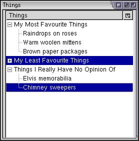

Tree Selection
The section will describe how to get and set the selected items in a tree.
Getting the Selected Tree Items
Each treeitem element in a tree may be selected individually. If you add the seltype attribute to the tree, set to the value single, the user may only select one row at a time. Otherwise, the user may select multiple rows, which will not necessarily be contiguous. The tree provides a number of functions which can be used to determine whether an item is selected.
First, let's see how we can determine when an item is selected. The onselect event handler may be added to the tree element. When the user selects an item from the tree, the event handler is called. The user may also change the selection by using the cursor keys. If the user holds down the cursor key to rapidly scroll through the items, the event handler is not called until the user stops. This results in a performance improvement. This also means that the highlight will appear on several items even though the select event is never fired for those items.
The syntax of the onselect event handler is shown below.
<tree id="treeset" onselect="alert('You selected something!');">The tree has a property currentIndex, which can be used to get the currently selected item, where the first row is 0.
Child items are included in the count just after their parents. This means that if there are 3 top-level items and each has two child items, there will be a total of 9 items. The first item (at index 0) will be the first top-level item. The next item at index 1 will be its first child. The second child will be at index 2 and the second parent item will be at position 3 and so on.
In the image to the right, there are eight rows displayed, of which two are selected. The first selected row has an index of 4 and the second has an index of 7. The rows that are not displayed are not included in the index count.
For trees that allow multiple selection, getting the list of selected rows is a bit more complicated. The tree's view has a selection property which holds information about the selected rows. This selection will be a TreeSelection object. The view doesn't need to implement this object itself, the tree will assign a selection object to the view's selection property when the view is attached to a tree. From the tree, you can get the selection using the tree's view property and then retrieve the view's selection property. You can use the methods of the selection object to retrieve the set of selected items or modify the selection.
Because the selected items in a multiple selection tree are not necessarily contiguous, you can retrieve each block of contigous selections using the getRangeCount and getRangeAt functions. The first function returns the number of selection ranges there are. If only one value is selected, this value will be 1. You would then write a loop for the number of ranges, calling getRangeAt to get the actual indices of the start and end of the range.
The getRangeAt function takes three arguments. The first is the range index. The second is an object which will be filled in by the function with the index of the first selected item. The third argument is an object which will be filled in with the index of the last selected item.
For example:
var start = new Object();
var end = new Object();
var numRanges = tree.view.selection.getRangeCount();
for (var t=0; t<numRanges; t++){
tree.view.selection.getRangeAt(t,start,end);
for (var v=start.value; v<=end.value; v++){
alert("Item "+v+" is selected.");
}
}We create two objects called 'start' and 'end'. Then, we iterate over the set of ranges, the number of which is returned by the getRangeCount function. The getRangeAt function is called passing the range index and the start and end objects. This function will fill in the start and end indicies by assigning them to the 'value' property. So if the first range is from the third item to the seventh item, 'start.value' will be 2 (remember that indices start with 0, so we subtract one.) and 'end.value' will be 6. An alert is displayed for each index.
If you just want to find out if a specific row is selected, use can use the isSelected function. It takes a row index as an argument and returns true if that row is selected.
alert(tree.view.selection.isSelected(3));
Modifying the Tree Selection
The selection object has a number of functions which may be used to change the selection. The simplest function is the select function, which deselects any rows that are currently selected and selects one specific row. For example, the following code will select the row at index 5:
tree.view.selection.select(5);
Note that you should not just change the tree's currentIndex property to change the selection. Instead, you should use the selection's select function as in the example above. You can select all rows with the selectAll function. Note that rows nested inside containers that are not open will not be selected. Naturally, this will only have any effect for trees that use multiple selection. There is also a clearSelection function to clear the selection, and an invertSelection function to reverse the selection, that is, deselect all selected rows and select all unselected rows.
To select specific rows, use the rangedSelect function which selects all rows in between two indices. Here is an example which selects rows between index 2 and 7. Note that rows 2 and 7 will also be selected.
tree.view.selection.rangedSelect(2,7,true);
The last argument indicates whether to add to the current selection or not. If true, the range will be added to the existing selection. If false, all existing selected rows will be deselected first. Finally, the clearRange function may be used to deselect a range of rows, leaving rows outside the range unaffected.
tree.view.selection.clearRange(2,7);
(Next) Next, we'll find out how to create a custom view for a tree.